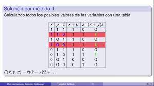
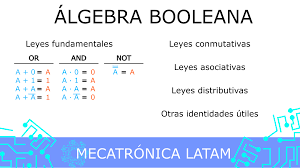

Álgebra de Boole - Funciones Booleanas
Una función booleana es una función cuyo dominio son las palabras conformadas por los valores binarios 0 ó 1 ("falso" o "verdadero", respectivamente), y cuyo co dominio son ambos valores 0 y 1.
MODOS DE REPRESENTACION
Existen distintas formas de representar una función lógica, entre las que podemos destacar las siguientes:
-Algebraica
-Por tabla de verdad
-Canónica
-Diagramas
|
|
|
|---|---|
|  |  |